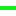

<!doctype html>
<html lang="en">
    <head>
        <meta charset="utf-8">
        <meta http-equiv="X-UA-Compatible" content="IE=edge">
        <meta name="viewport" content="initial-scale=1,user-scalable=no,maximum-scale=1,width=device-width">
        <meta name="mobile-web-app-capable" content="yes">
        <meta name="apple-mobile-web-app-capable" content="yes">
        <link rel="stylesheet" href="css/leaflet.css"><link rel="stylesheet" href="css/L.Control.Locate.min.css">
        <link rel="stylesheet" href="css/qgis2web.css"><link rel="stylesheet" href="css/fontawesome-all.min.css">
        <style>
        html, body, #map {
            width: 100%;
            height: 100%;
            padding: 0;
            margin: 0;
        }
        </style>
        <title></title>
    </head>
    <body>
        <div id="map">
        </div>
        <script src="js/qgis2web_expressions.js"></script>
        <script src="js/leaflet.js"></script><script src="js/L.Control.Locate.min.js"></script>
        <script src="js/leaflet.rotatedMarker.js"></script>
        <script src="js/leaflet.pattern.js"></script>
        <script src="js/leaflet-hash.js"></script>
        <script src="js/Autolinker.min.js"></script>
        <script src="js/rbush.min.js"></script>
        <script src="js/labelgun.min.js"></script>
        <script src="js/labels.js"></script>
        <script src="data/kolesarskapotkranjljubljana_1.js"></script>
        <script src="data/navezava_2.js"></script>
        <script src="data/kolesarskapotargonavti_3.js"></script>
        <script>
        var map = L.map('map', {
            zoomControl:true, maxZoom:28, minZoom:10
        }).fitBounds([[45.85054249642978,14.08625918142205],[46.273617169429755,14.859085360524254]]);
        var hash = new L.Hash(map);
        map.attributionControl.setPrefix('<a href="https://github.com/tomchadwin/qgis2web" target="_blank">qgis2web</a> &middot; <a href="https://leafletjs.com" title="A JS library for interactive maps">Leaflet</a> &middot; <a href="https://qgis.org">QGIS</a>');
        var autolinker = new Autolinker({truncate: {length: 30, location: 'smart'}});
        L.control.locate({locateOptions: {maxZoom: 19}}).addTo(map);
        var bounds_group = new L.featureGroup([]);
        function setBounds() {
        }
        map.createPane('pane_OpenStreetMap_0');
        map.getPane('pane_OpenStreetMap_0').style.zIndex = 400;
        var layer_OpenStreetMap_0 = L.tileLayer('https://tile.openstreetmap.org/{z}/{x}/{y}.png', {
            pane: 'pane_OpenStreetMap_0',
            opacity: 1.0,
            attribution: '',
            minZoom: 10,
            maxZoom: 28,
            minNativeZoom: 0,
            maxNativeZoom: 19
        });
        layer_OpenStreetMap_0;
        map.addLayer(layer_OpenStreetMap_0);
        function pop_kolesarskapotkranjljubljana_1(feature, layer) {
            var popupContent = '<table>\
                    <tr>\
                        <td colspan="2">' + (feature.properties['name'] !== null ? autolinker.link(feature.properties['name'].toLocaleString()) : '') + '</td>\
                    </tr>\
                    <tr>\
                        <td colspan="2">' + (feature.properties['cmt'] !== null ? autolinker.link(feature.properties['cmt'].toLocaleString()) : '') + '</td>\
                    </tr>\
                    <tr>\
                        <td colspan="2">' + (feature.properties['desc'] !== null ? autolinker.link(feature.properties['desc'].toLocaleString()) : '') + '</td>\
                    </tr>\
                    <tr>\
                        <td colspan="2">' + (feature.properties['src'] !== null ? autolinker.link(feature.properties['src'].toLocaleString()) : '') + '</td>\
                    </tr>\
                    <tr>\
                        <td colspan="2">' + (feature.properties['link1_href'] !== null ? autolinker.link(feature.properties['link1_href'].toLocaleString()) : '') + '</td>\
                    </tr>\
                    <tr>\
                        <td colspan="2">' + (feature.properties['link1_text'] !== null ? autolinker.link(feature.properties['link1_text'].toLocaleString()) : '') + '</td>\
                    </tr>\
                    <tr>\
                        <td colspan="2">' + (feature.properties['link1_type'] !== null ? autolinker.link(feature.properties['link1_type'].toLocaleString()) : '') + '</td>\
                    </tr>\
                    <tr>\
                        <td colspan="2">' + (feature.properties['link2_href'] !== null ? autolinker.link(feature.properties['link2_href'].toLocaleString()) : '') + '</td>\
                    </tr>\
                    <tr>\
                        <td colspan="2">' + (feature.properties['link2_text'] !== null ? autolinker.link(feature.properties['link2_text'].toLocaleString()) : '') + '</td>\
                    </tr>\
                    <tr>\
                        <td colspan="2">' + (feature.properties['link2_type'] !== null ? autolinker.link(feature.properties['link2_type'].toLocaleString()) : '') + '</td>\
                    </tr>\
                    <tr>\
                        <td colspan="2">' + (feature.properties['number'] !== null ? autolinker.link(feature.properties['number'].toLocaleString()) : '') + '</td>\
                    </tr>\
                    <tr>\
                        <td colspan="2">' + (feature.properties['type'] !== null ? autolinker.link(feature.properties['type'].toLocaleString()) : '') + '</td>\
                    </tr>\
                </table>';
            layer.bindPopup(popupContent, {maxHeight: 400});
        }

        function style_kolesarskapotkranjljubljana_1_0() {
            return {
                pane: 'pane_kolesarskapotkranjljubljana_1',
                opacity: 1,
                color: 'rgba(251,32,21,1.0)',
                dashArray: '',
                lineCap: 'square',
                lineJoin: 'bevel',
                weight: 4.0,
                fillOpacity: 0,
                interactive: false,
            }
        }
        map.createPane('pane_kolesarskapotkranjljubljana_1');
        map.getPane('pane_kolesarskapotkranjljubljana_1').style.zIndex = 401;
        map.getPane('pane_kolesarskapotkranjljubljana_1').style['mix-blend-mode'] = 'normal';
        var layer_kolesarskapotkranjljubljana_1 = new L.geoJson(json_kolesarskapotkranjljubljana_1, {
            attribution: '',
            interactive: false,
            dataVar: 'json_kolesarskapotkranjljubljana_1',
            layerName: 'layer_kolesarskapotkranjljubljana_1',
            pane: 'pane_kolesarskapotkranjljubljana_1',
            onEachFeature: pop_kolesarskapotkranjljubljana_1,
            style: style_kolesarskapotkranjljubljana_1_0,
        });
        bounds_group.addLayer(layer_kolesarskapotkranjljubljana_1);
        map.addLayer(layer_kolesarskapotkranjljubljana_1);
        function pop_navezava_2(feature, layer) {
            var popupContent = '<table>\
                    <tr>\
                        <td colspan="2">' + (feature.properties['id'] !== null ? autolinker.link(feature.properties['id'].toLocaleString()) : '') + '</td>\
                    </tr>\
                </table>';
            layer.bindPopup(popupContent, {maxHeight: 400});
        }

        function style_navezava_2_0() {
            return {
                pane: 'pane_navezava_2',
                opacity: 1,
                color: 'rgba(15,157,105,1.0)',
                dashArray: '',
                lineCap: 'round',
                lineJoin: 'round',
                weight: 4.0,
                fillOpacity: 0,
                interactive: false,
            }
        }
        map.createPane('pane_navezava_2');
        map.getPane('pane_navezava_2').style.zIndex = 402;
        map.getPane('pane_navezava_2').style['mix-blend-mode'] = 'normal';
        var layer_navezava_2 = new L.geoJson(json_navezava_2, {
            attribution: '',
            interactive: false,
            dataVar: 'json_navezava_2',
            layerName: 'layer_navezava_2',
            pane: 'pane_navezava_2',
            onEachFeature: pop_navezava_2,
            style: style_navezava_2_0,
        });
        bounds_group.addLayer(layer_navezava_2);
        map.addLayer(layer_navezava_2);
        function pop_kolesarskapotargonavti_3(feature, layer) {
            var popupContent = '<table>\
                    <tr>\
                        <td colspan="2">' + (feature.properties['name'] !== null ? autolinker.link(feature.properties['name'].toLocaleString()) : '') + '</td>\
                    </tr>\
                    <tr>\
                        <td colspan="2">' + (feature.properties['cmt'] !== null ? autolinker.link(feature.properties['cmt'].toLocaleString()) : '') + '</td>\
                    </tr>\
                    <tr>\
                        <td colspan="2">' + (feature.properties['desc'] !== null ? autolinker.link(feature.properties['desc'].toLocaleString()) : '') + '</td>\
                    </tr>\
                    <tr>\
                        <td colspan="2">' + (feature.properties['src'] !== null ? autolinker.link(feature.properties['src'].toLocaleString()) : '') + '</td>\
                    </tr>\
                    <tr>\
                        <td colspan="2">' + (feature.properties['link1_href'] !== null ? autolinker.link(feature.properties['link1_href'].toLocaleString()) : '') + '</td>\
                    </tr>\
                    <tr>\
                        <td colspan="2">' + (feature.properties['link1_text'] !== null ? autolinker.link(feature.properties['link1_text'].toLocaleString()) : '') + '</td>\
                    </tr>\
                    <tr>\
                        <td colspan="2">' + (feature.properties['link1_type'] !== null ? autolinker.link(feature.properties['link1_type'].toLocaleString()) : '') + '</td>\
                    </tr>\
                    <tr>\
                        <td colspan="2">' + (feature.properties['link2_href'] !== null ? autolinker.link(feature.properties['link2_href'].toLocaleString()) : '') + '</td>\
                    </tr>\
                    <tr>\
                        <td colspan="2">' + (feature.properties['link2_text'] !== null ? autolinker.link(feature.properties['link2_text'].toLocaleString()) : '') + '</td>\
                    </tr>\
                    <tr>\
                        <td colspan="2">' + (feature.properties['link2_type'] !== null ? autolinker.link(feature.properties['link2_type'].toLocaleString()) : '') + '</td>\
                    </tr>\
                    <tr>\
                        <td colspan="2">' + (feature.properties['number'] !== null ? autolinker.link(feature.properties['number'].toLocaleString()) : '') + '</td>\
                    </tr>\
                    <tr>\
                        <td colspan="2">' + (feature.properties['type'] !== null ? autolinker.link(feature.properties['type'].toLocaleString()) : '') + '</td>\
                    </tr>\
                </table>';
            layer.bindPopup(popupContent, {maxHeight: 400});
        }

        function style_kolesarskapotargonavti_3_0() {
            return {
                pane: 'pane_kolesarskapotargonavti_3',
                opacity: 1,
                color: 'rgba(18,240,25,1.0)',
                dashArray: '',
                lineCap: 'square',
                lineJoin: 'bevel',
                weight: 4.0,
                fillOpacity: 0,
                interactive: false,
            }
        }
        map.createPane('pane_kolesarskapotargonavti_3');
        map.getPane('pane_kolesarskapotargonavti_3').style.zIndex = 403;
        map.getPane('pane_kolesarskapotargonavti_3').style['mix-blend-mode'] = 'normal';
        var layer_kolesarskapotargonavti_3 = new L.geoJson(json_kolesarskapotargonavti_3, {
            attribution: '',
            interactive: false,
            dataVar: 'json_kolesarskapotargonavti_3',
            layerName: 'layer_kolesarskapotargonavti_3',
            pane: 'pane_kolesarskapotargonavti_3',
            onEachFeature: pop_kolesarskapotargonavti_3,
            style: style_kolesarskapotargonavti_3_0,
        });
        bounds_group.addLayer(layer_kolesarskapotargonavti_3);
        map.addLayer(layer_kolesarskapotargonavti_3);
        var baseMaps = {};
        L.control.layers(baseMaps,{' kolesarska-pot-argonavti': layer_kolesarskapotargonavti_3,' navezava': layer_navezava_2,' kolesarska-pot-kranj-ljubljana': layer_kolesarskapotkranjljubljana_1,"OpenStreetMap": layer_OpenStreetMap_0,}).addTo(map);
        setBounds();
        </script>
    </body>
</html>
